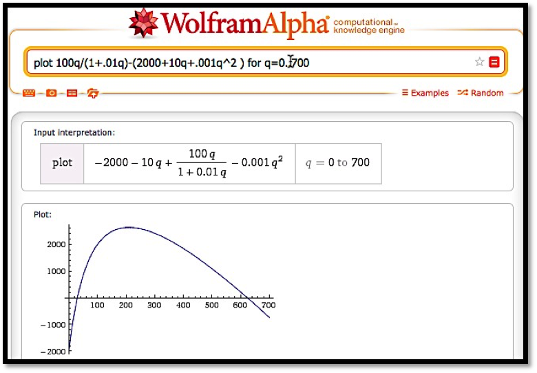

Section4.4Differentiation Using Computer Algebra¶ permalink
As we noted in chapter 1, in this book we are limiting ourselves to mathematical tools that the student can reasonably expect to find in a generic work environment. That is one of the reasons for focusing on using spreadsheets and Excel. However, we will also look at using free web tools, particularly as a means of doing symbolic manipulation. Differentiation is one of those operations that can be done with free tools available on the web. The student in this course will be expected to routinely do symbolic differentiation by hand. However, it is good to be able to check your work. We also want tools that will work reliably with messier problems.
In working with derivatives, we have looked at three basic problems:
Given a function, find a formula for its derivative. This corresponds to finding the marginal function.
Given a function, find the value of the derivative at a particular point. We do this when we want a rate of change at a particular point.
Given a function, find where the derivative is 0. We do this when we are trying to find minimum or maximum values of the function.
There are a number of websites that will take symbolic derivatives. We start with Wolfram|Alpha, which is available at
http://www.wolframalpha.com.
Example4.4.1A simple derivative with Alpha
: Use Wolfram|Alpha to find the derivative of \(x^3+5x+7\).
Solution: When you call the website, you get an input bar much as you would with your favorite search engine.
The interface for Wolfram|Alpha is rather robust. We can ask the question in plain English. In our case we would like to find the derivative of x^3+5x+7 with respect to x. Some of the ways of asking that question are:
find the derivative of (x^3+5x+7)
find the derivative of (x^3+5x+7) with respect to x
derivative of (x^3+5x+7)
differentiate (x^3+5x+7) with respect to x
differentiate (x^3+5x+7)
D (x^3+5x+7)
d/dx (x^+5x+7)
(x^3+5x+7)'
For all of these, the website provides the same answer.
Note that the response tells us the question that Wolfram|Alpha is answering. This helps us check that we have been properly understood.
It is worthwhile to note that Wolfram|Alpha has on option to show step-by-step solutions.
Wolfram|Alpha understands the convention that the variable for math problems is typically x. If we don't specify the variable with respect to which we are differentiating, it will guess that x is our variable. Other letters are treated as constants unless we use function notation with parentheses. Thus we can use Wolfram|Alpha to check our differentiation rules.
Example4.4.2Recalling the quotient rule
Use Wolfram|Alpha to recall the quotient rule.
Solution:
It should be noted that Wolfram|Alpha will not work with long variable names like Principal or MonthlyPayment. We simply need to change variables to work with Wolfram|Alpha.
Example4.4.3Working with long variable names
The cost of widgets is given by:
\(cost=2000+10*quantity+.001*quantity^2\)
Find the rate of change of cost with respect to quantity when quantity=1000. (We are using the derivative to estimate the marginal cost.)
Solution: Since we will use Wolfram|Alpha, we want to convert the equation to use single letter variables.
c=2000+10*q+.001*q^2.
We want to evaluate the derivative with respect to q when q=1000.
Thus, when quantity=1000, increasing production by 1 widget increases cost by $12.
The third basic derivative problem was to find a maximum or minimum. For extrema problems, we want to find where the derivative is 0, since the extrema can only occur at endpoints and critical points.
Example4.4.4Exploring a business example
The cost and demand price functions of widgets are given by:
When looking for a maximum, we always start by looking at a graph of the function in question.

From the graph, it is clear that we have a single maximum for the profit function and it occurs near q=200. To find this point, we want to take the derivative and set it equal to zero, or we want to use the solve command on the derivative. We enter the command
solve(derivative 100q/(1+.01q)-(2000+10q+.001q^2 ) with respect to q)
We need to do a bit of interpretation since Wolfram|Alpha is using numerical methods with complex numbers. In particular, the answers have a zero imaginary part. We are also looking for a positive number. Thus, we conclude profit is maximized at 209.8 widgets.
In looking at free software on the web for taking derivatives we started with Wolfram|Alpha because we can use it throughout the book when Excel does not solve our needs. It is also supported by the company that produces Mathematica®, so it should stay available for the foreseeable future. Another useful source are the solvers from Symbolab https://www.symbolab.com/solver.
Symbolab has a collection of solvers for the topics in this course.
It also has a section that lets you do drill and practice with the techniques we have learned. Like WolframAlpha, it gives the option of step-by-step solutions. I find the site a bit more user friendly for math students.
For individual problems we may want to use other software. For finding derivatives, a quick web search found http://www.derivative-calculator.net/
which is nicer if you are simply checking your work. As with Wolfram|Alpha, the derivative calculator shows you the problem in math form so you can check your syntax.
However, the show steps formatting is nicer since hovering over one step shows the change for that step in the next line.
You may find other websites for doing derivatives as well.
Subsection4.4.1Exercises: Differentiation Using Computer Algebra Problems¶ permalink
For 1-12, find the derivative of the given function